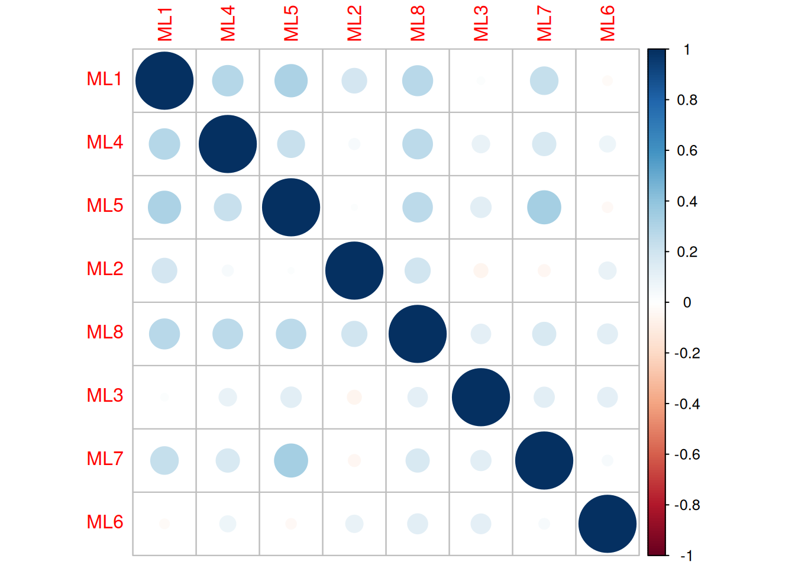
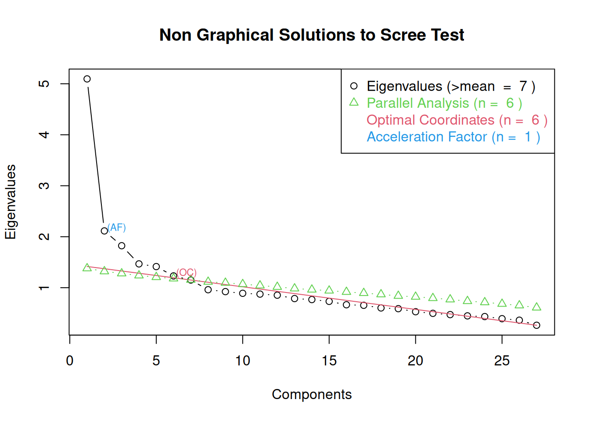
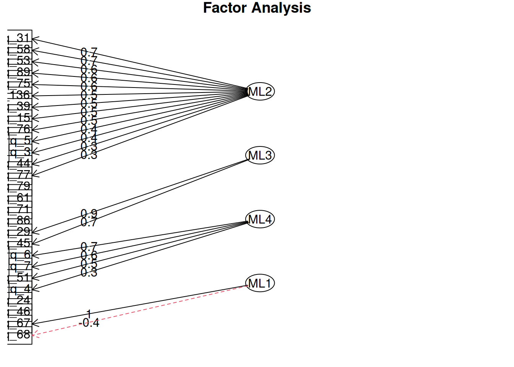
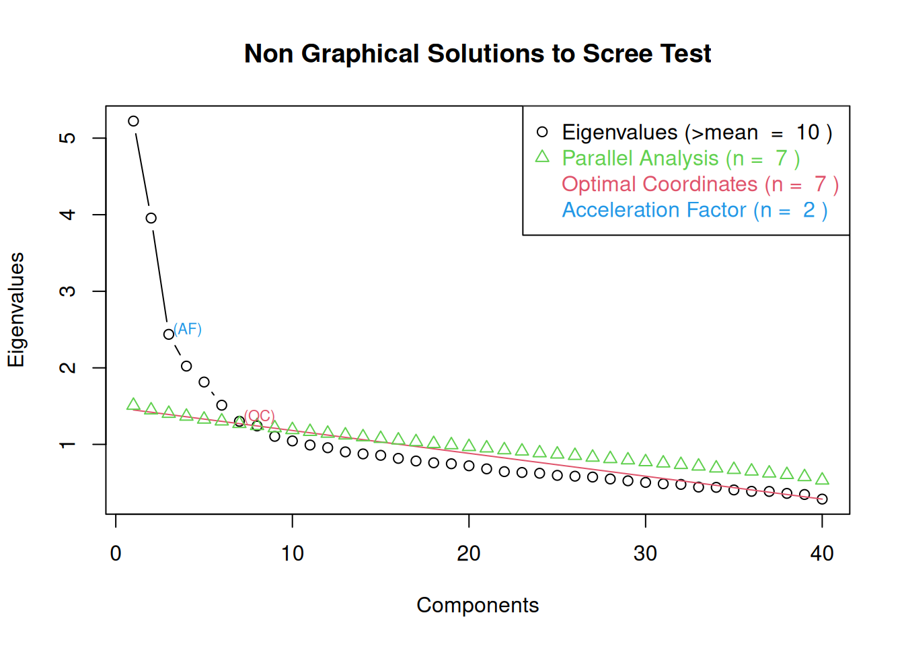
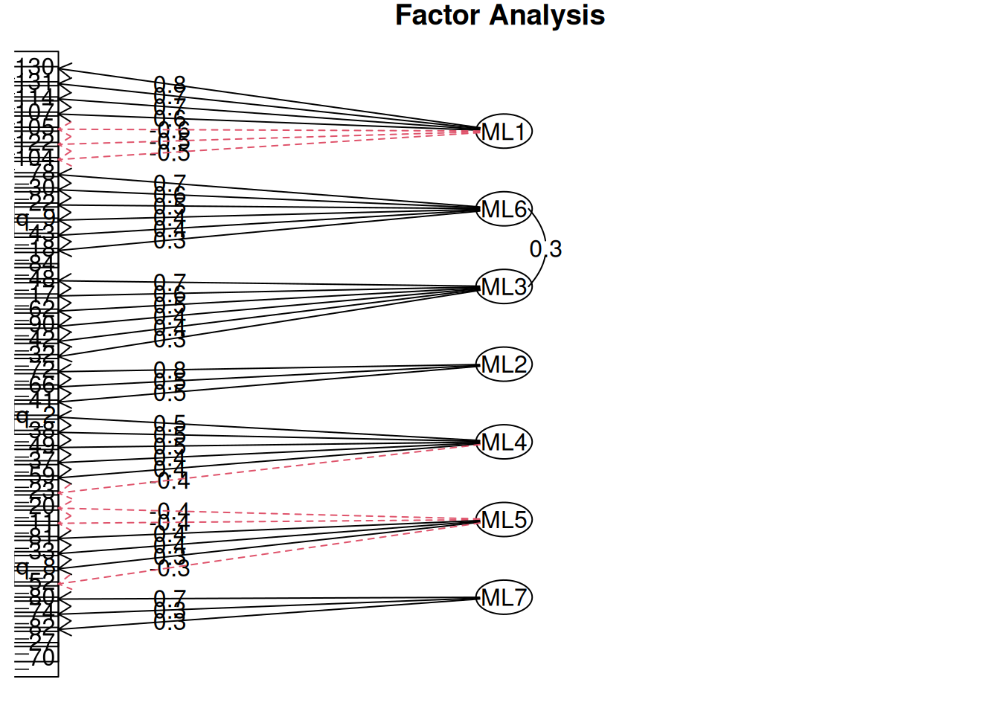
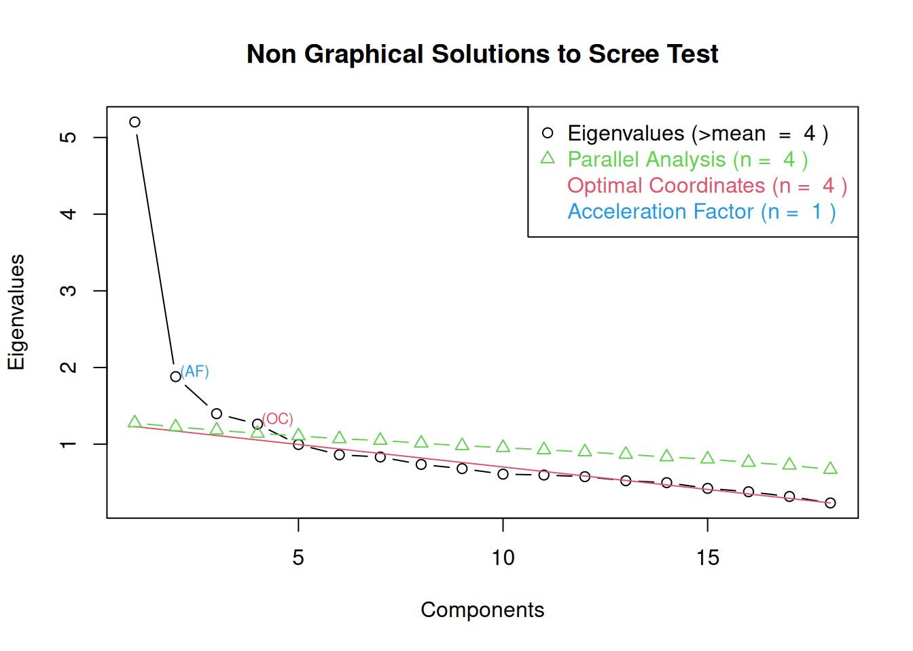
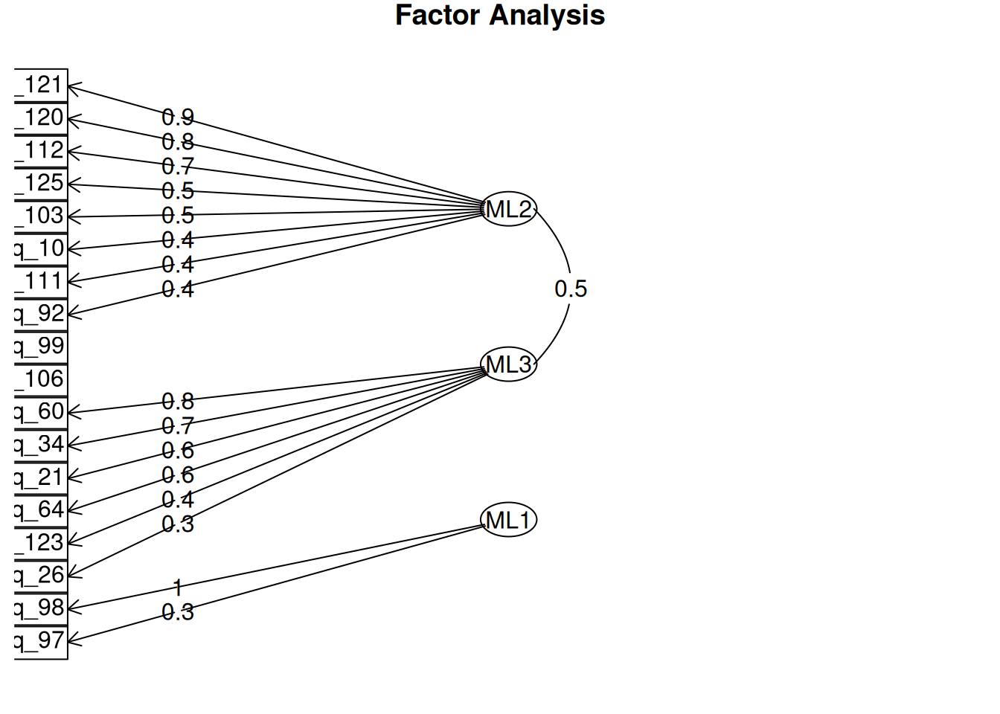
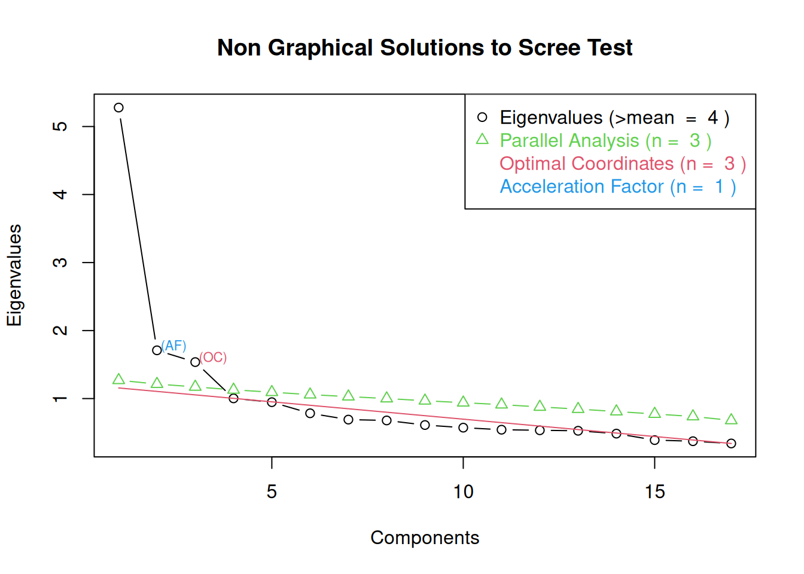
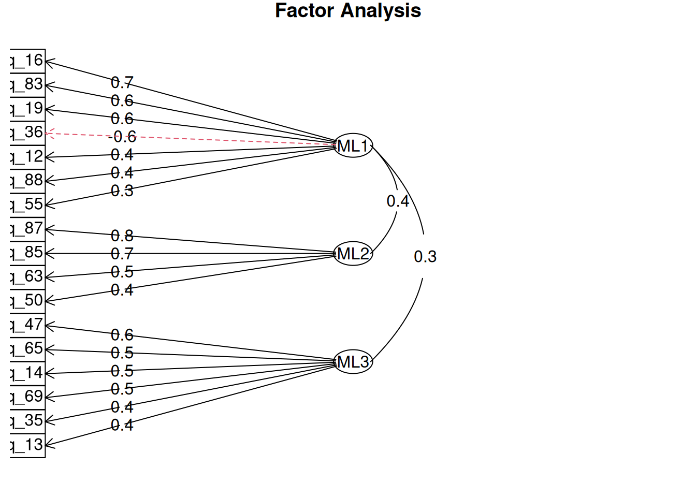

EFA
Оценка данных
Перед тем, как делать CFA и проверку теор.модели шкал компетенций, я сначала сделал общий эксплораторный анализ – как выглядит факторная структура на восемь компетенций.
меры адекватности данных
Два основных критерия адекватности данных при проведении эксплораторного факторного анализа – критерий Кайзера-Мейера-Олкина (KMO, значения от 0 до 1, выше 0.9 – очень хорошо, желательно не менее 0.6) и критерий сферичности Батлетта (p-value должно быть меньше 0.05).| Kaiser-Meyer-Olkin measure | Bartlett’s Test of Sphericity |
|---|---|
| 0.88 | 0 |
Восьмифакторная модель
Ниже дана таблица факторных нагрузок при выделении восьми факторов (как в теор.модели компетенций). Я использовал oblimin-вращение, так как факторы могут быть скоррелированы друг с другом. Нагрузки ниже 0.3 подавлены, чтобы отсечь вопросы с низким вкладом (нерелевантные).
корреляция факторов
Если выделять восемь факторов, то они относительно слабо коррелируют друг с другом, некоторые факторы вообще слабо связаны с другими. Однако и полной ортогональности факторов тоже нет, что вполне соответствует нашим наблюдениям о высокой доле вопросов с кросс-нагрузками (высокими вкладами в сразу несколько факторов).

факторные нагрузки
Сводная статистика качества модели при выделении восьми факторов.
total_items: сколько всего вопросов использователось (осталось после удаления вопросов с нагрузками ниже 0.3)q_loadings_03: количество вопросов в факторном решении, которые имеют высокую нагрузкуq_communality_weak: какое количество вопросов, у которых менее 40% дисперсии объясняется выделенными факторамиq_complexity_high: сколько вопросов делают большой вклад в больше чем 1 фактор (т. е. насколько вопросы размыты между факторами)
| total_items | loadings_03 | communality_weak | complexity_high |
|---|---|---|---|
| 137 | 106 | 109 | 79 |
Варианты с разным числом факторов
сводная таблица
Для того, чтобы в целом представлять качество данных и возможность на их основе выделить какой-то набор осмысленных факторов, я оценил варианты факторизации с 4-14 факторами. Результаты наже в таблице.
n_factors: количество факторовCFI: индекс для сравнения моделей. Больше подходит для CFA, но и в эксплораторном факторном анализе тоже может использоваться. Принимает значения от 0 до 1, чем выше – тем лучше (выше 0.9 считается приемлемой моделью).RMSEA: оценка, насколько модель может быть обобщена на ген.совокупность. Принимает значения от 0 до 1, чем ниже значение, тем лучше (меньше 0,05 — отличное соотвествие модели).cum_var– Cumulative Var, доля общей дисперсии переменных, объясненная факторами.prop_var_min/prop_var_max: минимальное и максимальное значения общей дисперсии, объясняемой тем или иным фактором модели (приprop_var_max= 0.04 никакой фактор не объясняет больше, чем 4% общей дисперсии). Этот размах показывает, насколько равноценны факторы.total_items: сколько всего вопросов использователось (осталось после удаления вопросов с нагрузками ниже 0.3)q_loadings_03: количество вопросов в факторном решении, которые имеют высокую нагрузкуq_communality_weak: какое количество вопросов, у которых менее 40% дисперсии объясняется выделенными факторамиq_complexity_high: сколько вопросов делают большой вклад в больше чем 1 фактор (т. е. насколько вопросы размыты между факторами)
При увеличении количества факторов растет индекс CFI и доля общей объясненной дисперсии. Однако видно, что достаточно много вопросов имеет низкую факторную нагрузку, а также имеет кросс-нагрузки.
динамика CFI
Видно, что CFI прирастает медленно и с увеличением количества факторов. При увеличении количества факторов CFI метрика прирастает скачками, и чем больше факторов, тем меньше прирост. Теор.модель с восемью факторами не выглядит оптимальной, а факторные модели с 13-14 факторами выглядят вероятными кандидатами на более глубокое исследование.
Переразбиение шкал
Для того, чтобы улучшить существующую модель, я попробовал оценить структуру крупных шкал отдельно – чтобы удалить нерелевантные вопросы и/или разбить их на субшкалы.
Ниже я посмотрел, какие факторы можно выделить из вопросов шкал отношения-1, работа с изменениями, профессионализм-2, результаты.
По большей части я руководствовался критерием Кайзера при определении количества факторов, а также исходным числом субшкал в той или иной шкале. В целом видно, что субшкалы действительно в той или иной степени составляют свою шкалу, однако почти во всех случаях это небольшие значения объясненной дисперсии (т. е. много вариативности ответов респондентов имеет другую причину, чем выделенные нами факторы).
В целом я склонен считать, что нет смысла в основной модели заменять шкалы набором переопределенных с помощью EFA субшкал – некоторые из субшкал очень маленькие, в целом все факторные модели оказались с неудовлетворительным качеством. Поэтому для улучшения CFA я просто решил удалить вопросы, которые не имеют высокой нагрузки ни в один из выделенных факторов. Это должно уменьшить количество нерелевантных вопросов в рамках этих четырех больших шкал и потенциально улучшить модель.
EFA, с2 = 5
Первый этап — оценка, а сколько всего можно выделить факторов. Исходно в шкале с5 (отношения-1) 27 вопросов. Согласно критерию Кайзера (eigenvalue, собственный вес фактора, больше 1) можно выделить семь факторов. По графику собственных значений (scree plot, график “каменистой осыпи”) оптимальными кажется выделение двух или четырех факторов.

Я попробовал переразбить вопросы шкалы с2 = 5 (отношения-1) на четыре субшкалы. Для этого я использовал эксплораторный факторный анализ с oblimin-вращением. Вращение нужно, что сделать структуру более интерпретабельной, а также выровнять факторы, так как без вращения первый фактор всегда забирает максимум дисперсии и, соответственно, остальные факторы меньше по количеству вопросов и менее интерпретабельны. Oblimin-вращение предполагает возможную корреляцию факторов между собой.
Факторные нагрузки по вопросам выглядят следюущим образом (отображение ниже 0.3 подавлено). Суммарно эти четыре фактора описывают порядка 30% общей дисперсии, первый фактор 14%.
##
## Loadings:
## ML2 ML3 ML4 ML1
## q_15 0.485
## q_86
## q_24
## q_76 0.463
## q_31 0.667
## q_39 0.503
## q_71
## q_75 0.561
## q_5 0.367
## q_53 0.622
## q_46
## q_44 0.332
## q_79
## q_4 0.337
## q_7 0.617
## q_29 0.896
## q_68 0.307 -0.446
## q_51 0.470
## q_61
## q_45 0.727
## q_89 0.571
## q_136 0.517
## q_3 0.352
## q_6 0.678
## q_67 1.000
## q_58 0.664
## q_77 0.320
##
## ML2 ML3 ML4 ML1
## SS loadings 3.839 1.519 1.487 1.295
## Proportion Var 0.142 0.056 0.055 0.048
## Cumulative Var 0.142 0.198 0.254 0.301Качество вопросов:
total_items: всего вопросовloadings_03: вопросов с нагрузками больше 0.3communality_weak: количество вопросов, в которых выделенные факторы объсняют менее 40% дисперсии (вопросы слабо свзаны с факторами)complexity_high: какое количество вопросов имеет высокие нагрузки более чем по одному фактору
Диаграмма связей вопросов и факторов выглядит вот так. 
Таблица вопросов с маркером объясняющего их фактора:
| C2 | c2 | c3 | q | competence_ru | question_ru | factor_number |
|---|---|---|---|---|---|---|
| отношения-1 | 5 | 12 | q_136 | принятие | я с уважением отношусь к личности, мировоззрению, ценностям клиента и стараюсь продемонстрировать это | 1 |
| отношения-1 | 5 | 12 | q_15 | принятие | когда я слушал(а) клиента, то смотрел(а) на него, активно поддерживая контакт | 1 |
| отношения-1 | 5 | 13 | q_53 | перефразирование и пересказ | я использовал(а) перефразирование, чтобы убедиться, что правильно понимаю клиента | 1 |
| отношения-1 | 5 | 13 | q_58 | перефразирование и пересказ | я уточнял(а) у клиента, правильно ли я его понимаю | 1 |
| отношения-1 | 5 | 14 | q_44 | эмпатия | я называл(а) чувства, переживаемые клиентом | 1 |
| отношения-1 | 5 | 14 | q_77 | эмпатия | я часто испытывал(а) теплые чувства и заботу по отношению к клиенту | 1 |
| отношения-1 | 5 | 15 | q_3 | поддержка | я спрашивал(а) клиента о том, комфортно ли ему во время сессии | 1 |
| отношения-1 | 5 | 15 | q_39 | поддержка | я говорил(а) клиентам слова одобрения и поддержки в процессе работы | 1 |
| отношения-1 | 5 | 15 | q_5 | поддержка | я использовал(а) невербальные способы поддержки клиента | 1 |
| отношения-1 | 5 | 18 | q_31 | резюмирование | после рассказа клиента я кратко резюмировал(а) ему суть сказанного | 1 |
| отношения-1 | 5 | 18 | q_76 | резюмирование | по следам рассказа клиента я обобщал(а) суть его переживаний и размышлений | 1 |
| отношения-1 | 5 | 18 | q_89 | резюмирование | я резюмировал(а) слова клиента | 1 |
| отношения-1 | 5 | 19 | q_75 | понятность | я использовал(а) метафоры и аналогии, чтобы клиенту было понятнее, что я имел(а) в виду | 1 |
| отношения-1 | 5 | 16 | q_29 | невербальные навыки | я не подстраивался(лась) под позу и манеру речи клиента | 2 |
| отношения-1 | 5 | 16 | q_45 | невербальные навыки | я подстраивался(лась) под позу, тембр и манеру речи клиента | 2 |
| отношения-1 | 5 | 14 | q_4 | эмпатия | я не называл(а) чувства клиента, он сам должен осознавать и называть их | 3 |
| отношения-1 | 5 | 14 | q_7 | эмпатия | я не отзеркаливал(а) чувства клиента, чтобы не вовлечься в его переживания и быть в состоянии помочь ему | 3 |
| отношения-1 | 5 | 17 | q_51 | конгруэнтность | я открыто делился своими чувствами с клиентом во время сессии | 3 |
| отношения-1 | 5 | 17 | q_6 | конгруэнтность | я старался(лась) не показывать клиенту свои чувства, возникающие в процессе терапии | 3 |
| отношения-1 | 5 | 16 | q_67 | невербальные навыки | я уделял(а) внимание смыслу сказанного клиентом, а не его невербальным проявлениям | 4 |
| отношения-1 | 5 | 16 | q_68 | невербальные навыки | я обращал(а) большое внимание на невербальные проявления клиента | 4 |
| отношения-1 | 5 | 13 | q_61 | перефразирование и пересказ | я повторял(а) сказанное словами клиента | NA |
| отношения-1 | 5 | 13 | q_79 | перефразирование и пересказ | я не использовал(а) перефразирование | NA |
| отношения-1 | 5 | 16 | q_86 | невербальные навыки | мне было трудно удерживать зрительный контакт с клиентом, это отвлекало от сути нашей беседы | NA |
| отношения-1 | 5 | 17 | q_24 | конгруэнтность | на вопросы клиента о моих чувствах я давал(а) честный ответ, даже если это могло задеть его | NA |
| отношения-1 | 5 | 18 | q_71 | резюмирование | я избегал(а) переспрашиваний в процессе работы | NA |
| отношения-1 | 5 | 19 | q_46 | понятность | я использовал(а) психологические термины, чтобы завоевать доверие клиента | NA |
| factor_number | n_questions |
|---|---|
| NA | 6 |
| 1 | 13 |
| 2 | 2 |
| 3 | 4 |
| 4 | 2 |
EFA, с2 = 8
Шкала работа с изменениями:

##
## Loadings:
## ML1 ML6 ML3 ML2 ML4 ML5 ML7
## q_41 0.501
## q_37 0.437
## q_42 0.377
## q_70
## q_122 -0.537
## q_104 -0.528
## q_27
## q_8 0.328
## q_82 0.326
## q_48 0.674
## q_22 0.453 0.410
## q_114 0.667
## q_49 0.470
## q_78 0.677
## q_90 0.411
## q_84
## q_66 0.519
## q_62 0.469
## q_17 0.627
## q_43 0.373
## q_81 0.403
## q_72 0.848
## q_11 -0.410
## q_59 0.426
## q_38 0.494
## q_2 0.547
## q_105 -0.615
## q_130 0.772
## q_18 0.348
## q_20 -0.450
## q_74 0.335 0.344
## q_52 -0.321
## q_80 0.708
## q_30 0.569
## q_107 0.633
## q_33 0.354
## q_131 0.678
## q_32 0.340
## q_23 -0.357
## q_9 0.384
##
## ML1 ML6 ML3 ML2 ML4 ML5 ML7
## SS loadings 3.081 1.943 1.769 1.769 1.781 1.363 1.133
## Proportion Var 0.077 0.049 0.044 0.044 0.045 0.034 0.028
## Cumulative Var 0.077 0.126 0.170 0.214 0.259 0.293 0.321Диаграмма, дисперсия каких вопросов каким фактором объясняется, выглядит вот так. Связь между факторами со значением 0.5 свидетельствует от достаточно сильной корреляции факторов друг с другом.

Таблица вопросов с маркером объясняющего их фактора:
| C2 | q | competence_ru | question_ru | ML1 | ML2 | factor_number |
|---|---|---|---|---|---|---|
| работа с изменениями | q_104 | уместное самораскрытие | когда клиент задает вопросы обо мне, я отвечаю максимально подробно | -0.528 | 0.131 | 1 |
| работа с изменениями | q_105 | уместное самораскрытие | я ничего не рассказываю клиенту о себе, на терапии мы говорим о клиенте | -0.615 | 0.012 | 1 |
| работа с изменениями | q_107 | уместное самораскрытие | я раскрываю перед клиентом личный опыт, когда понимаю, что у нас крепкий терапевтический альянс | 0.633 | -0.072 | 1 |
| работа с изменениями | q_114 | уместное самораскрытие | я делюсь своим опытом с клиентом, чтобы показать альтернативный способ мышления или действий | 0.667 | -0.027 | 1 |
| работа с изменениями | q_122 | уместное самораскрытие | когда клиент задает вопросы обо мне, я избегаю ответа на них | -0.537 | -0.048 | 1 |
| работа с изменениями | q_130 | уместное самораскрытие | я нормализую переживания клиента, раскрывая перед ним свой опыт | 0.772 | 0.050 | 1 |
| работа с изменениями | q_131 | уместное самораскрытие | я рассказываю клиенту о личном опыте применения упражнений и техник (например, практик внимательности), которые использую в терапии | 0.678 | 0.084 | 1 |
| работа с изменениями | q_18 | челендж (работа с затруднениями) | я обсуждал(а) с клиентом его затруднения, и мы вместе размышляли над тем, как их преодолеть | 0.022 | -0.045 | 2 |
| работа с изменениями | q_9 | вопросы | я хорошо понимал(а), что я спрашиваю у клиента и зачем | -0.123 | 0.012 | 2 |
| работа с изменениями | q_78 | альтернативные взгляды | я задавал(а) вопросы, направленные на расширение и дополнение видения ситуации клиентом | 0.067 | 0.013 | 2 |
| работа с изменениями | q_22 | пауза | я делал(а) паузы в разговоре, чтобы дать клиенту возможность побыть со своими мыслями и переживаниям | -0.069 | 0.410 | 2 |
| работа с изменениями | q_30 | стимуляция | я просил(а) клиента подробнее рассказать о чувствах, которые он испытывает | 0.002 | 0.002 | 2 |
| работа с изменениями | q_43 | стимуляция | я использовал(а) фразы «расскажите больше о…», «а что еще…?» | 0.099 | -0.037 | 2 |
| работа с изменениями | q_17 | челендж (работа с затруднениями) | я использовал(а) техники, помогающие клиенту преодолеть его дисфункциональные процессы и паттерны поведения | -0.061 | 0.069 | 3 |
| работа с изменениями | q_42 | вопросы | задавая вопросы клиенту, я опирался(лась) на интуицию | -0.167 | 0.095 | 3 |
| работа с изменениями | q_90 | вопросы | я задавал(а) вопросы, ориентируясь на поставленную цель терапии | -0.014 | -0.067 | 3 |
| работа с изменениями | q_32 | альтернативные взгляды | я рекомендовал(а) клиенту ознакомиться с дополнительной информацией (исследования, книги, статистические данные, статьи и др.), которые не совпадают с его убеждениями | 0.066 | -0.036 | 3 |
| работа с изменениями | q_48 | прямое руководство | я давал(а) клиенту домашние задания | 0.164 | -0.034 | 3 |
| работа с изменениями | q_62 | прямое руководство | я использовал(а) рекомендации и предписания в своей работе | -0.039 | 0.099 | 3 |
| работа с изменениями | q_41 | пауза | если в разговоре с клиентом возникала пауза, я старался(лась) ее чем-то заполнить | -0.116 | 0.501 | 4 |
| работа с изменениями | q_66 | пауза | я использовал(а) молчание, чтобы углубить контакт | 0.049 | 0.519 | 4 |
| работа с изменениями | q_72 | пауза | я не пользовался(лась) техникой терапевтических пауз на сессии | 0.031 | 0.848 | 4 |
| работа с изменениями | q_2 | челендж (работа с затруднениями) | я не указывал(а) клиенту на его дисфункциональные процессы, убеждения или внутренние противоречия, чтобы не нарушить наши отношения | -0.038 | 0.082 | 5 |
| работа с изменениями | q_49 | челендж (работа с затруднениями) | я ждал(а), когда клиент сам обнаружит свои внутренние противоречия и затруднения | 0.028 | -0.027 | 5 |
| работа с изменениями | q_38 | интерпретации | я не раскрывал(а) клиенту свое видение его случая | 0.137 | -0.092 | 5 |
| работа с изменениями | q_23 | альтернативные взгляды | я старался(лась) не влиять на убеждения клиента | -0.047 | 0.132 | 5 |
| работа с изменениями | q_59 | альтернативные взгляды | я не привносил(а) информации, противоречащей взгляду клиента | 0.065 | 0.037 | 5 |
| работа с изменениями | q_37 | стимуляция | если клиент сам не рассказывал подробно о чем-то, я не просил(а) клиента рассказать больше | 0.027 | -0.018 | 5 |
| работа с изменениями | q_33 | интерпретации | я рассказывал(а) клиенту о том, что может значить его поведение или состояние с точки зрения той теории, которой я учился(лась) | 0.132 | -0.086 | 6 |
| работа с изменениями | q_52 | интерпретации | я просил(а) клиента говорить о своих чувствах и мыслях и не предлагал(а) своих интерпретаций | 0.015 | -0.015 | 6 |
| работа с изменениями | q_81 | интерпретации | я не использовал(а) интерпретации, чтобы не исказить субъективный опыт клиента | -0.073 | 0.187 | 6 |
| работа с изменениями | q_8 | вопросы | сначала я собирал(а) как можно больше информации о жизни клиента, а потом думал(а), что из этого пригодится в работе | -0.021 | -0.043 | 6 |
| работа с изменениями | q_11 | прямое руководство | я не предлагал(а) клиенту конкретных решений ситуации | -0.131 | 0.082 | 6 |
| работа с изменениями | q_20 | прямое руководство | я предлагал(а) клиенту варианты поведения в определенных ситуациях | -0.169 | 0.048 | 6 |
| работа с изменениями | q_82 | интерпретации | я акцентировал(а) внимание клиента на том, что его действия, слова и чувства могут иметь определенный психологический смысл | 0.049 | 0.048 | 7 |
| работа с изменениями | q_74 | пауза | я предлагал(а) клиенту помолчать, чтобы обратить его внимание на то, что с ним происходит | 0.094 | 0.335 | 7 |
| работа с изменениями | q_80 | стимуляция | я просил(а) клиента на сессии усилить невербальные проявления чувств и переживаний | 0.070 | 0.065 | 7 |
| работа с изменениями | q_27 | челендж (работа с затруднениями) | когда я наблюдал(а) у клиента какой-то дисфункциональный процесс/убеждение или внутреннее противоречие, я прямо указывал(а) на это | 0.045 | -0.086 | NA |
| работа с изменениями | q_84 | вопросы | я использовал(а) вопросы только для сбора информации, а не для продвижения терапевтического процесса | 0.018 | 0.195 | NA |
| работа с изменениями | q_70 | стимуляция | когда клиент дистанцировался и избегал говорить о чем-то, я старался(лась) вовлечь его в обсуждение | -0.057 | 0.202 | NA |
| factor_number | n_questions |
|---|---|
| NA | 3 |
| 1 | 7 |
| 2 | 6 |
| 3 | 6 |
| 4 | 3 |
| 5 | 6 |
| 6 | 6 |
| 7 | 3 |
EFA, с2 = 10
Шкала профессионализм-2:

##
## Loadings:
## ML2 ML3 ML1
## q_10 0.436
## q_34 0.706
## q_123 0.353
## q_26 0.327
## q_60 0.775
## q_99
## q_64 0.602
## q_97 0.346
## q_98 0.999
## q_112 0.710
## q_111 0.427
## q_121 0.871
## q_103 0.478
## q_106
## q_92 0.414
## q_120 0.845
## q_21 0.603
## q_125 0.502 0.310
##
## ML2 ML3 ML1
## SS loadings 3.148 2.263 1.239
## Proportion Var 0.175 0.126 0.069
## Cumulative Var 0.175 0.301 0.369Диаграмма, дисперсия каких вопросов каким фактором объясняется, выглядит вот так. Связь между факторами со значением 0.5 свидетельствует от достаточно сильной корреляции факторов друг с другом. 
Таблица вопросов с маркером объясняющего их фактора:
| C2 | q | competence_ru | question_ru | factor_number |
|---|---|---|---|---|
| профессионализм-2 | q_103 | супервизия - личная терапия - интервизия | я обращаюсь к своим коллегам, чтобы обсудить возникающие в процессе консультирования проблемы (например, этические, эмоциональные и пр.) | 1 |
| профессионализм-2 | q_112 | супервизия - личная терапия - интервизия | я не прибегаю к супервизиям/интервизиям в своей работе | 1 |
| профессионализм-2 | q_121 | супервизия - личная терапия - интервизия | я обращаюсь к интервизии и/или супервизии для рефлексии работы с клиентами | 1 |
| профессионализм-2 | q_125 | супервизия - личная терапия - интервизия | я прохожу личную терапию для проработки собственных проблем и запросов | 1 |
| профессионализм-2 | q_111 | мотивация развиваться | я не провожу профилактику эмоционального выгорания | 1 |
| профессионализм-2 | q_120 | мотивация развиваться | я предпринимаю специальные действия для профилактики эмоционального выгорания (супервизии, личная терапия, интервизии, группы и т.д.) | 1 |
| профессионализм-2 | q_92 | мотивация развиваться | я посещаю конференции и участвую в них | 1 |
| профессионализм-2 | q_10 | самооценка | вне сессий я тренировал(а) свои профессиональные навыки (например, в группах, на тренингах и т.д.) | 1 |
| профессионализм-2 | q_123 | мотивация развиваться | мне не хватает времени и сил следить за исследованиями в области психологии и смежных специальностей | 2 |
| профессионализм-2 | q_21 | самооценка | я проводил(а) самостоятельный анализ сессий, чтобы лучше разобраться в случае клиента | 2 |
| профессионализм-2 | q_26 | самооценка | на сессиях я действовал(а) интуитивно, не вдаваясь в детальный анализ своей работы | 2 |
| профессионализм-2 | q_34 | самооценка | между сессиями я анализировал(а) качество терапевтического альянса | 2 |
| профессионализм-2 | q_60 | самооценка | я анализировал(а) проведенные мною сессии, чтобы выявить свои зоны развития | 2 |
| профессионализм-2 | q_64 | самооценка | я не анализировал(а) случай клиента между сессиями | 2 |
| профессионализм-2 | q_98 | супервизия - личная терапия - интервизия | я не ощущаю потребности в личной терапии | 3 |
| профессионализм-2 | q_97 | мотивация развиваться | я не ощущаю необходимости в курсах повышения квалификации | 3 |
| профессионализм-2 | q_106 | супервизия - личная терапия - интервизия | я осваиваю новые подходы самостоятельно, не прибегая к обучению у других специалистов | NA |
| профессионализм-2 | q_99 | мотивация развиваться | я изучаю актуальную повестку научных событий в своей области | NA |
| factor_number | n_questions |
|---|---|
| NA | 2 |
| 1 | 8 |
| 2 | 6 |
| 3 | 2 |
EFA, с2 = 11
Аналогично с с2 = 11 (результаты), попробовал разбить на две субшкалы:

##
## Loadings:
## ML1 ML2 ML3
## q_83 0.620
## q_88 0.372 0.371
## q_87 0.757
## q_65 0.529
## q_85 0.720
## q_12 0.439
## q_69 0.456
## q_55 0.332
## q_35 0.320 0.416
## q_47 0.568
## q_14 0.502
## q_19 0.611
## q_13 0.368
## q_36 -0.563 -0.345
## q_63 0.535
## q_50 0.348 0.399
## q_16 0.746
##
## ML1 ML2 ML3
## SS loadings 2.396 1.953 1.657
## Proportion Var 0.141 0.115 0.097
## Cumulative Var 0.141 0.256 0.353Диаграмма, дисперсия каких вопросов каким фактором объясняется, выглядит вот так. Связь между факторами со значением -0.4 свидетельствует от достаточно сильной отрицательной корреляции. 
Таблица вопросов с маркером объясняющего их фактора:
| C2 | q | competence_ru | question_ru | factor_number |
|---|---|---|---|---|
| результаты | q_16 | резюмирование сессии и результатов терапии c клиентом | я специально оставлял(а) время в конце сессии для подведения итогов | 1 |
| результаты | q_19 | резюмирование сессии и результатов терапии c клиентом | я не подводил(а) итогов на сессии | 1 |
| результаты | q_36 | резюмирование сессии и результатов терапии c клиентом | я подводил(а) итог сессии, только если об этом просил клиент | 1 |
| результаты | q_55 | резюмирование сессии и результатов терапии c клиентом | я не выделял(а) значимые моменты сессии для клиента, поскольку он сам запоминает самое важное | 1 |
| результаты | q_83 | резюмирование сессии и результатов терапии c клиентом | в конце сессии я уточнял(а) у клиента, что он считает результатом сессии | 1 |
| результаты | q_12 | оценка результатов | я использовал(а) специальные инструменты для подведения промежуточных итогов (например, шкалы или вопросы) | 1 |
| результаты | q_88 | оценка результатов | во время сессии я сопоставлял(а) изначальный запрос клиента и текущие результаты | 1 |
| результаты | q_50 | оценка результатов | я просил(а) клиента рассказывать мне о том, как он оценивает свой прогресс | 2 |
| результаты | q_63 | поддержание результатов | я поддерживал(а) в клиенте ощущение веры в свою способность достичь цели, напоминая о его предыдущих успехах | 2 |
| результаты | q_85 | поддержание результатов | я замечал(а) даже малейшие положительные изменения у клиента и говорил(а) ему о них | 2 |
| результаты | q_87 | поддержание результатов | я акцентировал(а) внимание клиента на его достижениях | 2 |
| результаты | q_13 | оценка результатов | я не тратил(а) время сессии на оценку промежуточных результатов | 3 |
| результаты | q_35 | оценка результатов | я не задавал(а) клиенту вопросы про результаты терапии, так как, когда они появятся, это станет само собой заметно | 3 |
| результаты | q_65 | оценка результатов | я ждал(а) полного решения проблемы, чтобы вместе с клиентом подвести итоги работы | 3 |
| результаты | q_14 | поддержание результатов | я не отмечал(а) незначительные изменения клиента, пока проблема не была полностью решена | 3 |
| результаты | q_47 | поддержание результатов | я не обсуждал(а) с клиентом то, что уже достигнуто, а фокусировался(лась) на том, что еще не сделано | 3 |
| результаты | q_69 | поддержание результатов | я не акцентировал(а) внимание на успехах клиента и ждал(а), что он сам их заметит | 3 |
| factor_number | n_questions |
|---|---|
| 1 | 7 |
| 2 | 4 |
| 3 | 6 |